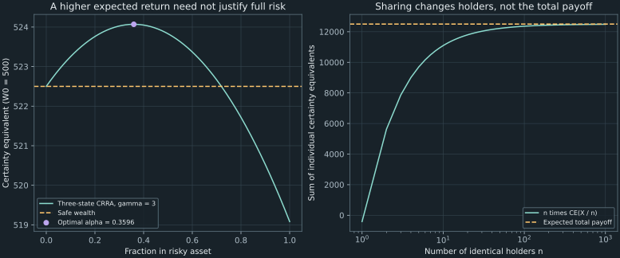

14. Portfolio objectives and expected utility
An investor with 500 allocates 40% to a venture and 60% to a safe asset paying 4.5%. Three possible venture returns give terminal wealth 489.5, 525.5, or 563.5. With probabilities 0.25, 0.5, and 0.25, expected wealth is 526. For the stated risk-averse utility, the investor regards this lottery as equivalent to approximately 524.049481 received for certain. The difference, approximately 1.950519, quantifies a preference over uncertainty in money units.
We build that calculation from the wealth equation, distinguish expected utility from utility of expected wealth, and derive a one-asset allocation condition. Then we formulate a continuous-return integral, examine the St. Petersburg game, and explain what risk sharing and insurance accomplish under explicit assumptions. The examples separate preferences, beliefs, and market prices.
Source spine: recording 39, expected utility and portfolio objectives, recording 41, choice under uncertainty and risk sharing, and recording 43, utility workshop. The latter recording also contains quadrature and supplied-price sensitivity exercises, developed with the numerical-integration workshop. The explicit allocation optimum, density-coordinate corrections, ticket-fee calculation, and information/incentive examples below are elaborations.
14.1 Specify wealth, probabilities, and the objective separately Recording 39, 1:44
Let $W_0>0$ be initial wealth, $\alpha$ the fraction invested in a risky asset, and $1-\alpha$ the fraction in a safe asset. Over the same holding period, the safe simple return is $r_f$ and the risky simple return is the random variable $R$. With no intermediate withdrawals or trading costs, terminal wealth is
\[ W(\alpha,R)=W_0\big[(1-\alpha)(1+r_f)+\alpha(1+R)\big].\tag{14.1} \]The factors $1+r_f$ and $1+R$ include the invested principal. Multiplying by the simple returns alone would calculate a gain rather than terminal wealth. For positive gross returns and $0\leq\alpha\leq1$, wealth remains positive. Leverage and short positions require additional domain checks; they are not automatically admissible for a utility defined only on positive wealth.
A utility function $u(w)$ ranks certain wealth outcomes. An expected-utility decision rule ranks a finite lottery with outcomes $w_i$ and probabilities $p_i$ by $\sum_ip_iu(w_i)$, where $p_i\geq0$ and $\sum_ip_i=1$. We assume that representation here. Its axiomatic justification is a separate result; an arbitrary preference over lotteries need not have this form.
The probabilities describe the investor's beliefs about outcomes, or a declared physical statistical model. They are not automatically the pricing weights used to replicate claims in Chapter 8. An investor's expected utility depends on preferences and beliefs; a no-arbitrage pricing equation uses its specified market model. The same terminal payment can enter both questions without making their probabilities interchangeable.
Equal expected wealth can yield different choices
Recording 41 compares keeping 10 for certain with a lottery paying 5 or 15 with equal probabilities. Both have expected wealth 10. Under $u(w)=w$, both objectives equal 10. Under $u(w)=w^2$ on positive wealth, the lottery gives $(25+225)/2=125$, exceeding the certain outcome's utility 100. Under $u(w)=\log w$, the lottery gives $\tfrac12\log5+\tfrac12\log15=\log\sqrt{75}$, below $\log10$. Expected wealth alone does not determine the choice after the utility function changes.
Utility's zero and scale are conventional. Replacing $u$ by $\widetilde u=au+b$, with $a>0$, changes every expected utility to $aE[u]+b$ and leaves all comparisons unchanged. A nonlinear increasing transformation preserves rankings of certain wealth but generally changes rankings of lotteries. For example, $w$ and $w^2$ both increase on positive wealth, yet one is indifferent between the two choices above while the other prefers the gamble. A negative utility number therefore does not by itself signify a loss or a bad decision.
14.2 Turn concavity into a monetary certainty equivalent Recording 41, 16:39
A function is concave on a wealth interval if $u(\lambda w_1+(1-\lambda)w_2)\geq\lambda u(w_1)+(1-\lambda)u(w_2)$ for all outcomes in the interval and $0\leq\lambda\leq1$. The left side is utility of the lottery's expected wealth; the right side is expected utility of its two outcomes. Thus concavity is exactly the condition that the expected-utility decision maker weakly prefers the mean for certain to every such two-point lottery. This is the relevant sense of risk aversion here.
The same inequality holds for a finite lottery by induction. Combine the first $n-1$ states into their conditional weighted mean, apply the two-point inequality to that mean and the last state, and apply the induction hypothesis within the first group. Zero-weight states can be removed. Hence $u(EW)\geq E[u(W)]$ whenever these finite values are defined. Strict concavity gives a strict inequality for nonconstant outcomes with positive probability. Linear increasing utility gives equality, and convex increasing utility reverses the preference.
For a twice continuously differentiable utility, $u''\leq0$ is equivalent to concavity on an interval; $u''<0$ throughout is a sufficient condition for strict concavity. Strict concavity need not require a strictly negative second derivative at every individual point. Domain and monotonicity matter too: $w^2$ is increasing on positive wealth, but would not represent “more is preferred” over all negative wealth.
Invert expected utility, not expected money
Suppose $u$ is continuous and strictly increasing over the finite lottery's wealth interval. Its certainty equivalent $c$ solves
\[ u(c)=E[u(W)],\qquad c=u^{-1}(E[u(W)]).\tag{14.2} \]A weighted average of the outcome utilities lies between their minimum and maximum. Continuity gives existence of $c$ between the smallest and largest wealth, and strict increase gives uniqueness. The risk premium in this comparison is $\pi=EW-c$. Concavity implies $c\leq EW$, so $\pi\geq0$; it is a preference-based wealth difference, not automatically a market excess return.
For the equal-probability 5/15 lottery with log utility, $\log c=(\log5+\log15)/2$, giving $c=\sqrt{75}\approx8.660254038$. Its mean is 10 and its risk premium is approximately 1.339745962. Replacing log utility by a positive affine transformation leaves this monetary certainty equivalent unchanged, because the same transformation appears on both sides of (14.2).
A ticket price depends on background wealth
Let a ticket pay $X$ and cost $p$, with current wealth $W_0$. A reservation purchase price solves $E[u(W_0-p+X)]=u(W_0)$, subject to affordability and the utility domain. Equation (14.2) applied to $X$ alone is a different equation. Subtracting a fixed amount before a nonlinear utility evaluation generally changes the comparison. A certainty equivalent of a payoff cannot therefore be advertised as a universal willingness to pay, independent of the buyer's wealth.
The distinction is visible even for a two-outcome ticket. Take log utility, current wealth 10, and ticket payments 5 or 15 with equal probabilities. Indifference requires $(15-p)(25-p)=100$ after exponentiating the average logarithm, with $p<15$. The admissible solution is $p=20-5\sqrt5\approx8.819660113$, whereas the certainty equivalent of $X$ alone is approximately 8.660254038. Existing wealth changes the risk being evaluated.
14.3 Normalize CRRA utility before taking its logarithmic limit Recording 39, 15:18
The constant-relative-risk-aversion family gives one explicit preference parameter. For positive wealth measured in a fixed reference currency unit, use the normalized form
\[ u_\gamma(w)=\begin{cases} \dfrac{w^{1-\gamma}-1}{1-\gamma},&\gamma\ne1,\\ \log w,&\gamma=1, \end{cases}\qquad w>0,\quad\gamma\geq0.\tag{14.3} \]For $\gamma\ne1$, differentiation gives $u'_\gamma(w)=w^{-\gamma}>0$ and $u''_\gamma(w)=-\gamma w^{-\gamma-1}$. Positive $\gamma$ gives strict concavity; $\gamma=0$ gives $w-1$, an affine risk-neutral utility. The logarithmic branch has the same derivative formulas at $\gamma=1$.
To take the limit, write $a=1-\gamma$ and $w^a=e^{a\log w}$. Since $(e^{a\log w}-1)/a\to\log w$, the normalization in (14.3) has the stated finite limit. The unnormalized expression $w^{1-\gamma}/(1-\gamma)$ used in the lecture contains an additional diverging constant $1/(1-\gamma)$. It has equivalent preferences for each fixed $\gamma\ne1$, but does not itself converge to log utility without subtracting that constant. The code uses expm1 to evaluate the numerator accurately when the exponent is small.
Measure curvature in a way that respects utility's scale freedom
Multiplying utility by a positive constant changes $u''$ while leaving preferences unchanged. Raw second derivative therefore cannot by itself compare risk aversion across arbitrary utility scales. For a twice differentiable increasing utility, define absolute and relative local risk aversion as
\[ A(w)=-\frac{u''(w)}{u'(w)},\qquad \mathcal R(w)=wA(w).\tag{14.4} \]Both ratios remain unchanged by a positive affine transformation of utility. For CRRA, $A(w)=\gamma/w$ and $\mathcal R(w)=\gamma$. This gives the family's name and a precise local interpretation of its parameter. Pratt (1964), printed pages 122–125, develops this risk-aversion framework. The illustrations here specify $\gamma$ as an assumption; they do not estimate it for a population or for the reader.
Mean–variance reasoning is locally useful, with a remainder
Let wealth be $W=m+tZ$, where $EZ=0$, $Z$ is bounded, and $t$ is small enough that outcomes remain in a neighborhood with three continuous utility derivatives and $u'(m)>0$. Taylor expansion and averaging give $E[u(W)]=u(m)+\tfrac12u''(m)t^2E[Z^2]+O(t^3)$. The inverse of $u$ is locally differentiable because $u'(m)\ne0$, so its certainty equivalent is $m-\pi$ with $\pi=O(t^2)$. Expand $u(m-\pi)$ and equate the two expressions:
\[ \pi=\frac12A(m)\operatorname{Var}(W)+O(t^3).\tag{14.5} \]For CRRA, the leading coefficient is $\gamma/(2m)$. This derives a local variance penalty rather than postulating one. Its coefficient depends on wealth, and higher-order distributional features enter the remainder. Arbitrary expected-utility problems are not exactly determined by a mean and variance. Large or poorly integrable risks require the actual expectation, not this local expansion.
CRRA also implies a scaling property for the present portfolio model. Multiplying initial wealth by $b>0$ multiplies every terminal outcome by $b$. For $\gamma\ne1$, the unnormalized power utility is multiplied by $b^{1-\gamma}>0$; for log utility, it increases by $\log b$. Either transformation leaves the optimal fraction unchanged when the feasible fractions and return distribution are unchanged. Other constraints or preferences can break that conclusion. A utility's wealth dependence and a portfolio's feasible set must both be specified.
14.4 Reproduce the three-outcome utility workshop Recording 43, 0:37
Use $W_0=500$, risky fraction $\alpha=0.4$, safe simple return $r_f=0.045$, and CRRA coefficient $\gamma=3$. Equation (14.1) reduces to $W=500[0.6(1.045)+0.4(1+R)]$. The safe part contributes 313.5 to terminal wealth; the risky part contributes $200(1+R)$. Keep the fraction 0.4 attached to the risky return, and retain the principal in both gross-return factors.
The source considers three realized returns. To calculate a finite expectation, give them probabilities as follows, ordered with their matching outcomes:
| Risky simple return | Probability | Terminal wealth | Canonical utility, in units of $10^{-6}$ |
|---|---|---|---|
| −0.12 | 0.25 | 489.5 | −2.086722083 |
| 0.06 | 0.50 | 525.5 | −1.810608536 |
| 0.25 | 0.25 | 563.5 | −1.574643206 |
For comparison with the lecture, the table uses its canonical $v(w)=-1/(2w^2)$. The normalized utility in (14.3) at $\gamma=3$ is $u_3(w)=(1-w^{-2})/2=v(w)+1/2$, so it produces the same choices and certainty equivalent. The sign of $v$ is harmless: as positive wealth increases, its negative value approaches zero and becomes larger.
Using unrounded utilities, the finite expectation is
\[ E[v(W)]=0.25v(489.5)+0.5v(525.5)+0.25v(563.5) \approx-1.820645590384\times10^{-6}.\tag{14.6} \]Adding the three utilities without their probabilities would not be an expectation. Dropping the displayed $10^{-6}$ scale would change the inverse utility calculation drastically. Expected wealth is $0.25(489.5)+0.5(525.5)+0.25(563.5)=526$, whose utility is approximately $-1.807167950961\times10^{-6}$. It is larger than (14.6), consistent with strict concavity and nonconstant wealth.
The certainty equivalent solves $-1/(2c^2)=E[v(W)]$, giving
\[ c=\big(E[W^{-2}]\big)^{-1/2} \approx524.049481188, \qquad\pi=526-c\approx1.950518812.\tag{14.7} \]The wealth variance is 684.75. The local approximation (14.5) gives $3(684.75)/(2\times526)\approx1.952709125$, close to the actual premium but not identical. That agreement is a checked approximation for this lottery. The three-point probabilities are a discrete model; they do not simultaneously describe the separate continuous lognormal-return assumption used elsewhere in the workshop.
import math
wealths = [489.5, 525.5, 563.5]
probabilities = [.25, .5, .25]
mean = math.fsum(p*w for p, w in zip(probabilities, wealths, strict=True))
inverse_square_moment = math.fsum(
p/w**2 for p, w in zip(probabilities, wealths, strict=True))
certainty_equivalent = inverse_square_moment**(-.5)
assert mean == 526
assert 489.5 < certainty_equivalent < mean
print(f"CE={certainty_equivalent:.9f}, premium={mean-certainty_equivalent:.9f}")
14.5 Derive the allocation condition before searching a grid Recording 39, 26:59
Keep the discrete return model just defined, but now allow the risky fraction $\alpha$ to vary in $[0,1]$. Write $B=1+r_f=1.045$ and relative terminal wealth $g_i(\alpha)=B+\alpha(R_i-r_f)$. Maximizing expected utility of $g_i$, using (14.3), is equivalent to maximizing expected utility of $W_0g_i$ by CRRA's scaling property. Define $J(\alpha)=\sum_ip_iu_\gamma(g_i(\alpha))$.
Because there are finitely many strictly positive gross returns and the fractions lie in a compact interval, each $g_i$ stays positive. Differentiating the finite sum gives
\[ J'(\alpha)=\sum_ip_i g_i(\alpha)^{-\gamma}(R_i-r_f),\qquad J''(\alpha)=-\gamma\sum_ip_i g_i(\alpha)^{-\gamma-1}(R_i-r_f)^2. \tag{14.8} \]For $\gamma>0$ and at least one positive-probability nonzero excess return, the second derivative is strictly negative. The objective is strictly concave and its derivative strictly decreases. If $J'(0)\leq0$, the optimum is zero; if $J'(1)\geq0$, the optimum is one. Otherwise the continuous derivative has exactly one zero inside the interval, which is the unique maximum. This establishes what a scalar root solver is finding.
For the workshop probabilities and $\gamma=3$, $J'(0)\approx0.015335190571$ and $J'(1)\approx-0.027993588848$. Bisection of the derivative gives $\alpha_*\approx0.359596630064$, or about 35.96% in the risky asset. Its certainty equivalent at initial wealth 500 is approximately 524.069232235. The fixed workshop fraction 0.4 gives approximately 524.049481188, safe-only gives 522.5, and all-risky gives approximately 519.082132560. A positive expected excess return therefore does not imply that the full risky position maximizes this investor's objective.
A grid can display these comparisons, but a selected grid point is not by itself an optimality proof. Here strict concavity and the derivative sign change supply the mathematical argument, while the numerical bracket describes its approximation. When $\gamma=0$, the second derivative vanishes and expected wealth is linear in $\alpha$; an endpoint is optimal unless the expected excess return is exactly zero. Borrowing limits, short sales, transaction costs, or other return models change the problem.
Marginal utility gives a concrete bridge to pricing weights
At an interior optimum, (14.8) says $\sum_ip_i u'(W_i)(G_i-B)=0$, where $G_i=1+R_i$. Define normalized positive weights $Q_i=p_i u'(W_i)/\sum_jp_j u'(W_j)$. They sum to one and satisfy $\sum_iQ_iG_i=B$. Consequently any terminal payoff valued by $B^{-1}\sum_iQ_iF_i$ prices the stock's gross payoff $G$ and the bank's constant payoff $B$ at their unit initial costs.
In this example the weights are approximately $(0.29971160,0.49529846,0.20498994)$, compared with the physical probabilities $(0.25,0.5,0.25)$. The low-wealth state receives more relative weight because its marginal utility is higher. This constructs one positive pricing rule consistent with the two traded returns and this interior optimum. Three states and two traded assets do not generally make every claim uniquely replicable; the calculation is not a complete equilibrium or a theorem that arbitrary investor probabilities are already risk-neutral.
14.6 Form the continuous expectation in the correct variable Recording 39, 17:15 Recording 43, 12:30
For a continuous return model, define log gross return $X=\log(1+R)$ and assume $X\sim N(\mu,\sigma^2)$, with $\sigma>0$. Then the gross return $G=e^X$ is lognormal and strictly positive, while simple return $R=e^X-1$ takes values in $(-1,\infty)$. Simple return is not itself a positive lognormal random variable. Nor is the log-return mean $\mu$ the mean simple return.
The Gaussian exponential moment can be derived directly. If $f_X$ is the normal density, completing the square gives $e^xf_X(x)=e^{\mu+\sigma^2/2}f_{\mu+\sigma^2,\sigma}(x)$, where the last factor is another normalized normal density. Integrating gives
\[ E[G]=e^{\mu+\sigma^2/2},\qquad E[R]=e^{\mu+\sigma^2/2}-1.\tag{14.9} \]Recording 39's illustrative log-return parameters $\mu=0.08,\sigma=0.2$ therefore imply mean simple return approximately 10.5170918%, rather than 8%. Its separate expected-utility setup uses $W_0=100$, $r_f=0.05$, $\gamma=3$, and $\alpha=0.5$. The workshop's continuous case instead uses $\mu=0.09,\sigma=0.22$ with the 500-wealth, 4.5%-safe-rate setup. Its mean gross return is approximately 1.120976297726, or a mean simple return near 12.0976298%. These are assumed holding-period parameters, distinct from the three-point return model.
Changing the integration variable changes the density
Let $\phi(z)=e^{-z^2/2}/\sqrt{2\pi}$ be the standard normal density. Using log gross return as the variable, expected utility is
\[ J(\alpha)=\int_{-\infty}^{\infty} u\!\left(W_0[(1-\alpha)(1+r_f)+\alpha e^x]\right) \frac1\sigma\phi\!\left(\frac{x-\mu}{\sigma}\right)\,dx.\tag{14.10} \]Using $x=\mu+\sigma z$ cancels the $1/\sigma$ against $dx=\sigma dz$, so the same integral is $\int u(W(\alpha,e^{\mu+\sigma z}-1))\phi(z)\,dz$. If the integration variable is simple return $r=e^x-1$, then $dx=dr/(1+r)$ and its density is
\[ f_R(r)=\frac{1}{(1+r)\sigma} \phi\!\left(\frac{\log(1+r)-\mu}{\sigma}\right),\qquad r>-1. \tag{14.11} \]The factor $1/(1+r)$ is the Jacobian of the coordinate change. Omitting it while integrating over $r$ changes the expectation. An integrand's numerical value at a point depends on its variable; only the integral with the matching differential is invariant.
Audit one point from the workshop
At simple return $r=0.25$, log gross return is $x=\log1.25\approx0.223143551314$. With $\mu=0.09,\sigma=0.22$, the standardized value is approximately 0.605197960519. Wealth is 563.5 and canonical utility $v=-1/(2W^2)\approx-1.574643205533\times10^{-6}$. The densities and integrands are:
| Integration coordinate | Density at the corresponding point | Utility times density |
|---|---|---|
| Log gross return $x$ | 1.509920369064 | $-2.377585850042\times10^{-6}$ |
| Simple return $r$ | 1.207936295251 | $-1.902068680033\times10^{-6}$ |
| Standard normal $z$ | 0.332182481194 | $-5.230688870091\times10^{-7}$ |
The $r$ density is the $x$ density divided by 1.25, and the $z$ density is the $x$ density multiplied by 0.22. No one of these pointwise products can be substituted into a quadrature table expressed in another variable without the corresponding transformation. Numerical evaluation of the full integral requires a truncation and quadrature policy, developed in the integration chapter.
Some limiting allocations already have analytic checks: safe-only wealth is certain; all-risky wealth is $W_0e^X$, whose log utility has expectation $\log W_0+\mu$ and whose power moments follow the same completed-square calculation. A mixed safe/risky allocation generally needs another calculation. We do not infer that every expected-utility integral lacks a closed form merely because one mixed example is inconvenient.
The normal assumption is a model choice. A central limit theorem concerns suitably normalized sums under particular conditions and in an asymptotic limit; it does not imply exact Gaussian log returns at every observed horizon. Dependence, changing volatility, rare events, or a different marginal law require separate assessment. Neither a claim that all assets follow fractional Brownian motion nor a fixed dimension cutoff separating quadrature from simulation follows from that theorem. Computational cost, smoothness, dependence structure, and required accuracy should guide the numerical method.
14.7 The St. Petersburg game separates finite outcomes from a finite mean Recording 39, 9:32 Recording 41, 1:53
Toss a fair coin independently until the first head. Let $N$ be the toss on which that head appears and let the payment be $X=2^N$. The event $N=n$ requires $n-1$ tails followed by a head, so its probability is $2^{-n}$. These probabilities sum to one. The chance of never seeing a head is $\lim_{n\to\infty}2^{-n}=0$, so the payout is finite with probability one.
Its expectation is nevertheless infinite: $EX=\sum_{n=1}^\infty2^{-n}2^n=\sum_{n=1}^\infty1=\infty$. “Finite almost surely” and “finite expectation” are different statements. The game motivates checking the objective being maximized and the feasibility of a proposed payment contract. It does not invalidate the rules of expectation.
Log utility gives an explicitly finite expectation
Since $\log X=N\log2$, $E[\log X]=\log2\sum_{n\geq1}n2^{-n}=2\log2$. The sum follows by differentiating the convergent geometric series $\sum_{n\geq0}z^n=1/(1-z)$ at $z=1/2$, or by summing the geometric tail probabilities of $N$. Thus log utility's certainty equivalent of the positive payoff $X$ alone is $e^{2\log2}=4$. This finite number does not require the monetary mean to be finite. It also does not make 4 the reservation ticket price for every background wealth.
With log utility and initial wealth 100, a ticket costing $p$ leaves terminal wealth $100-p+2^N$. Restrict the demonstration to $0\leq p\leq100$, so every outcome stays positive without borrowing. The indifference equation is
\[ \sum_{n=1}^{\infty}2^{-n}\log(100-p+2^n)=\log100.\tag{14.12} \]The left side decreases strictly with $p$ on this interval. At zero it exceeds $\log100$, since the ticket adds a positive payoff. At 100 it is $2\log2<\log100$. The uniformly convergent sum is continuous there, so a unique reservation price exists. The companion's 256-term evaluation and width-based root calculation give approximately 7.792098192. That result differs from the certainty equivalent 4 of $X$ alone because (14.12) evaluates the buyer's total wealth after paying.
Bound what was omitted rather than trusting a long sum
For $0\leq p\leq100$, $2^n\leq100-p+2^n\leq100\,2^n$. The omitted logarithms are nonnegative and at most $\log100+n\log2$. After term $M$, the omitted probability is $2^{-M}$ and $\sum_{n>M}n2^{-n}=(M+2)2^{-M}$. The omitted expected utility is therefore at most
\[ [\log100+(M+2)\log2]2^{-M}.\tag{14.13} \]At $M=256$, this is approximately $1.5842\times10^{-75}$. It bounds the mathematical tail of the series, not the ordinary floating-point arithmetic or the root's signs. The numerical width and evaluation errors remain separate. This explicit bound also justifies the continuity statement used above through uniform convergence.
A finite contract must state what happens after a limit. For example, pay $2^n$ if the first head appears by toss $M$ and zero if all first $M$ tosses are tails. Its expected monetary payout is exactly $M$, with maximum payout $2^M$. This is a different, bounded contract; its zero outcome also means that log utility of its payoff alone is undefined without positive background wealth. Changing the payment cap or default rule changes both the expectation and the utility calculation.
Bernoulli's paper, in the 1954 English translation, printed pages 31–33, discusses this type of game and distinguishes purchase value from the value of an already-owned prospect. Its displayed payout sequence begins at one rather than the lecture variant's two. The arithmetic above specifies which scaled contract is being evaluated.
14.8 Sharing a common payoff reduces each holder's exposure Recording 41, 18:45
Risk aversion does not mean rejecting every gamble with a positive mean. Its definition compares a lottery with its own mean received for certain. To decide whether a positive-mean gamble beats doing nothing, compute the actual utility difference. Recording 41 uses an equally likely payoff of 50,000 or −25,000, whose mean is 12,500, and then considers holding only 1% of it.
For an explicit calculation, use constant absolute risk aversion, or CARA utility $u(w)=-e^{-aw}$, with declared $a=1/50000$. Its derivative is positive, its second derivative negative, and $-u''/u'=a$. It is defined on all real wealth, unlike log or CRRA utility. The coefficient is a declared modeling input; changing it changes the following certainty equivalents.
Solving $-e^{-ac}=E[-e^{-aX}]$ gives $\operatorname{CE}(X)=-\log E[e^{-aX}]/a$. CARA's exponential form also gives $\operatorname{CE}(b+X)=b+\operatorname{CE}(X)$ for a constant $b$. Thus its reservation ticket price equals this payoff certainty equivalent when the domain and budget allow the transaction. That is a property of this utility family, not the general rule in §14.2.
| Fraction $s$ of the common payoff | Mean payoff | CARA certainty equivalent | Risk premium |
|---|---|---|---|
| 1 | 12500 | −413.304871 | 12913.304871 |
| 0.1 | 1250 | 1109.506639 | 140.493361 |
| 0.01 | 125 | 123.593763 | 1.406237 |
| 0.001 | 12.5 | 12.485938 | 0.014062 |
The full gamble has a negative certainty equivalent under this declared preference, so the holder prefers zero to receiving it. A 1% share has a positive certainty equivalent, so the same holder prefers that share to zero. The risk-aversion coefficient did not change; the exposure became smaller. Selling ninety-nine 1% shares at 123 each gives certain receipts of 12,177 and leaves one 1% share. By translation invariance, the seller's resulting certainty equivalent is approximately $12177+123.593763=12300.593763$. Identical buyers value their own 1% shares above 123 before other constraints or costs.
The local scaling mechanism
For bounded $X$, expand the exponential moment at a small share $s$: $E[e^{-asX}]=1-asEX+\tfrac12a^2s^2E[X^2]+O(s^3)$. Expanding its logarithm subtracts the mean-square contribution, giving
\[ \operatorname{CE}(sX)=sEX-\frac a2s^2\operatorname{Var}(X)+O(s^3). \tag{14.14} \]The mean is first order in exposure while the small-risk premium is second order. With $n$ identical holders each taking $X/n$, the sum of their individual certainty equivalents is $EX-a\operatorname{Var}(X)/(2n)+O(n^{-2})$, approaching the mean as the number of holders grows. This explains why small shares can be attractive without calling the holders literally risk-neutral.
The total random payment remains $\sum_{i=1}^nX/n=X$. All shares of this one venture experience the same underlying success or failure. Risk sharing spreads exposure across people; it does not diversify that common shock away from the aggregate payoff. Summing individual monetary certainty equivalents under declared identical preferences is also not the certainty equivalent of their combined payoff evaluated by one unchanged investor.

14.9 Insurance and information constrain the sharing argument Recording 41, 26:25
Consider a loss $L=200000$ with probability $p=0.001$ and no loss with probability 0.999. Expected loss is 200. Full insurance exchanges that uncertain loss for a certain premium $b$. Under the declared CARA coefficient $a=1/50000$, indifference between uninsured and insured wealth gives $e^{ab}=(1-p)+pe^{aL}$, hence
\[ b_{\max}=\frac1a\log\big((1-p)+pe^{aL}\big) \approx2610.555780.\tag{14.15} \]The premium can exceed expected loss because it removes an unfavorable risk from a risk-averse holder. In this simplified example a premium of 300 is below the holder's reservation premium and gives a risk-neutral insurer an expected profit of $300-200=100$ per policy. This is expected profit, not a certain receipt after claims. The result assumes full payment of the stated loss, enforceable coverage, and the declared preferences; it is not a quote for an actual insurance contract.
Independent pooling and common losses have different variances
If $N$ losses are independent with this same distribution, variance of average loss is $L^2p(1-p)/N$. The standard deviation per policy falls from approximately 6321.392252 for one policy to 63.213923 for 10,000 policies. This follows by summing independent variances and dividing by $N^2$. If instead all houses suffer the same common event, average loss equals the single common loss and its variance does not fall with $N$. “Many policies” alone is not an independence assumption or a guarantee against aggregate catastrophe.
Different beliefs, existing exposures, transaction costs, and control rights can also change the gains from transferring a share. An entrepreneur who assigns different probabilities to success from prospective buyers evaluates another lottery. Retained ownership may carry decision rights in addition to its financial payoff. The expected-utility calculations above isolate one channel; they do not prove that complete outside ownership is optimal for every venture.
Adverse selection: the offer itself changes beliefs
Here is a minimal information example. Suppose assets have expected payoff 150 or 50 with equal prior probabilities, and only sellers know their type. Assume high-type sellers require a price of at least 120 and low-type sellers at least 40. An uninformed risk-neutral buyer initially calculates an average payoff of 100. At a proposed price of 100, however, high types decline and low types accept. Conditional on acceptance under these assumptions, expected payoff is 50, so paying the unconditional prior mean loses money in expectation.
This is adverse selection: privately known quality changes who participates, which changes the distribution relevant to the buyer. It does not prove that every share sale reveals bad news. The conclusion depends on the declared reservation prices and information structure. Ignoring that selection while retaining the original 50/50 weights would be the calculation error.
Moral hazard: selling a share can change the payoff distribution
For a separate incentive example, assume a risk-neutral entrepreneur can exert hidden effort costing 10. Effort raises the probability of a project paying 100 from 0.2 to 0.8; failure pays zero. If the entrepreneur retains fraction $\theta$ of the project, the extra expected private receipt from effort is $\theta(0.8-0.2)100=60\theta$. Effort is strictly worthwhile only when $60\theta>10$, or $\theta>1/6$; at equality the entrepreneur is indifferent.
Selling 99% leaves $\theta=0.01$, which does not satisfy that incentive condition. The distribution assumed when selling the shares may then change. This is moral hazard: an unobserved action affects the outcome after contracting. It differs from private information about a preexisting type. A risk-sharing plan must account for both the reduction in an owner's exposure and any resulting change in incentives. These two original small models make the source's qualitative information problems explicit.
14.10 Keep preference, statistical, and numerical assumptions visible
Expected utility combines a utility function, a probability model, a feasible decision set, and a wealth equation. Changing any one can change the recommendation. A positive mean is insufficient to choose the whole risky asset, strict risk aversion does not prohibit all favorable gambles, and a certainty equivalent is meaningful only for its stated wealth domain and lottery. These are model-based decisions, not inferred personal preferences.
Parameter uncertainty is another layer. If a statistical model specifies a distribution $\pi(\vartheta)$ over unknown return parameters, its predictive expected utility is $\int J(\alpha;\vartheta)\pi(\vartheta)\,d\vartheta$ when the expectation exists. Plugging in one estimated parameter value answers a different question. Such a distribution must come from a declared inferential model; it is not created by a tighter quadrature tolerance. The illustrative $\mu$, $\sigma$, probabilities, and risk-aversion parameters here are fixed inputs.
Dimensional cost also needs a precise target. An optimization grid with $n$ candidates in each of $k$ free allocation coordinates has $n^k$ combinations. A tensor integration grid with $m$ points in each of $d$ independent state coordinates has $m^d$ nodes. Nesting them can multiply those costs. The number of assets need not equal the number of independent risk factors. Correlation or a factor representation can change the effective integration problem. This motivates specialized optimization, quadrature, or simulation without a universal rule that one method stops working at a particular small dimension.
The next numerical task is to evaluate the continuous expectation with controlled truncation and discretization errors. A well-evaluated integral still depends on the chosen return law and preferences. Preserving that distinction prevents numerical precision from being mistaken for financial certainty.
14.11 Exercises with worked solutions
Exercise 14.1: calculate wealth before evaluating utility
For $W_0=500$, $\alpha=0.4$, and safe return 4.5%, compute wealth at risky returns −12%, 6%, and 25%. Use probabilities 0.25, 0.5, and 0.25 and $v(w)=-1/(2w^2)$ to calculate expected wealth, certainty equivalent, and risk premium.
Worked solution
The safe component contributes $500(0.6)(1.045)=313.5$. The risky component is $200(1+R)$, giving wealth 489.5, 525.5, and 563.5. The weighted mean is 526. The expected inverse-square wealth is $0.25/489.5^2+0.5/525.5^2+0.25/563.5^2$, so $c=(E[W^{-2}])^{-1/2}\approx524.049481188$. The premium is approximately 1.950518812. Expected canonical utility is approximately $-1.820645590384\times10^{-6}$. Principal, probability weights, and the utility's displayed scale must all be retained.
Exercise 14.2: repair the CRRA limit and test scale invariance
Why does $w^{1-\gamma}/(1-\gamma)$ not directly tend to $\log w$? Derive the normalized limit and the CRRA absolute/relative risk-aversion coefficients. Explain why raw $u''$ is not an invariant preference comparison.
Worked solution
With $a=1-\gamma$, $e^{a\log w}/a=1/a+\log w+O(a)$ contains a diverging constant. Subtracting $1/a$ gives $(w^a-1)/a\to\log w$. For each fixed nonzero $a$, that subtraction preserves expected-utility rankings. Differentiation gives $u'=w^{-\gamma}$ and $u''=-\gamma w^{-\gamma-1}$, so $A=\gamma/w$ and $\mathcal R=\gamma$. Multiplying utility by any positive number multiplies $u''$ by the same number without changing preferences; the ratio $-u''/u'$ cancels that arbitrary scale. Scaling all feasible terminal wealth outcomes by the same positive factor preserves a CRRA optimal fraction under unchanged returns and constraints.
Exercise 14.3: certify an interior allocation and construct weights
For a finite positive-gross-return lottery and $\gamma>0$, derive $J'$ and show when its zero is the unique optimal fraction. At an interior optimum, construct positive normalized weights under which mean risky gross return equals the safe gross return.
Worked solution
Relative wealth is $g_i=B+\alpha(G_i-B)$. Thus $J'=\sum p_i g_i^{-\gamma}(G_i-B)$ and $J''=-\gamma\sum p_i g_i^{-\gamma-1}(G_i-B)^2<0$ if at least one positive-probability excess return is nonzero. Opposite endpoint signs therefore give a unique derivative zero and maximum; otherwise the appropriate endpoint condition applies. Here the optimum is approximately 0.359596630064. In full-wealth notation, set $Q_i=p_i u'(W_i)/\sum_jp_ju'(W_j)$. The interior condition implies $\sum_iQ_i(G_i-B)=0$, hence $E_QG=B$. These weights support one pricing rule, not unique replication of all claims in an incomplete three-state market.
Exercise 14.4: change integration coordinates without losing a Jacobian
Assume $X=\log(1+R)\sim N(0.09,0.22^2)$. Calculate $E[R]$ and derive $f_R(r)$ from $f_X(x)$. At $r=0.25$, relate the densities in $x$, $r$, and standard-normal $z$ coordinates.
Worked solution
Completing the square in $e^xf_X(x)$ gives $E[R]=e^{0.09+0.22^2/2}-1\approx0.120976297726$. The change $x=\log(1+r)$ has derivative $dx/dr=1/(1+r)$, so $f_R(r)=f_X(\log(1+r))/(1+r)$ on $r>-1$. At $r=0.25$, $x\approx0.223143551314$, $z\approx0.605197960519$, and $f_X(x)\approx1.509920369064$. Therefore $f_R(r)\approx1.207936295251$ and $\phi(z)=0.22f_X(x)\approx0.332182481194$. The integration differentials transform with the densities. Simple return has support $(-1,\infty)$, while gross return is positive lognormal.
Exercise 14.5: distinguish the infinite mean from the ticket price
For $P(N=n)=2^{-n}$ and $X=2^N$, show that $X$ is finite almost surely but $EX=\infty$. Find the log certainty equivalent of $X$ alone. Write the different reservation-price equation for a buyer with wealth 100 and bound a 256-term expected-log truncation.
Worked solution
The probability of no head ever is zero, so $N$ and $X$ are finite almost surely. Each monetary expectation term is $2^{-n}2^n=1$, so their sum diverges. But $E\log X=\log2\sum n2^{-n}=2\log2$, giving certainty equivalent 4. A wealth-100 buyer instead solves $\sum2^{-n}\log(100-p+2^n)=\log100$ with $0\leq p\leq100$, giving the numerical reservation price approximately 7.792098192. The omitted tail after $M$ terms is at most $[\log100+(M+2)\log2]2^{-M}$; at 256 this is about $1.5842\times10^{-75}$. That mathematical tail bound does not certify floating-point signs or make the monetary expectation finite.
Exercise 14.6: separate sharing, pooling, and incentives
Under CARA coefficient $1/50000$, explain why a 1% share of the equally likely 50,000/−25,000 payoff can be attractive although the full payoff is not. Does splitting it remove aggregate risk? For the hidden-effort project, derive the retained fraction needed to make effort strictly worthwhile.
Worked solution
CARA certainty equivalent is $-\log E[e^{-aX}]/a$. It is approximately −413.304871 for the full payoff and +123.593763 for a 1% share. The small-share expansion has mean proportional to $s$ and premium proportional to $s^2$, which explains the difference. Splitting the common payment leaves its total exactly $X$; all shares still move together. This differs from independent insurance pooling, where average-loss variance falls as $1/N$. Finally, hidden effort costs 10 and raises expected project output by $(0.8-0.2)100=60$. A holder retaining $\theta$ obtains extra expected private receipt $60\theta$, so strict effort requires $\theta>1/6$. Selling almost everything can change the payoff distribution through incentives, rather than merely dividing a fixed lottery.
14.12 Sources and reproducibility
Recordings 39 and 41 develop the expected-utility objective, risk attitudes, CRRA, the St. Petersburg motivation, and the sharing/insurance interpretation. Recording 43 supplies the 500-wealth workshop and the continuous-density point. Its later quadrature and supplied-price sensitivity problems belong to the numerical-integration workshop. The numerical examples above identify where a probability model or utility parameter is declared independently rather than recovered from an incomplete spoken table.
Pratt, “Risk Aversion in the Small and in the Large” (1964), printed pages 122–125, defines the local coefficient, cash equivalent, purchase-price distinction, and small-risk premium. The chapter derives their mechanisms in finite examples with explicit hypotheses. Bernoulli's 1738 paper in Sommer's 1954 English translation, printed pages 24–28 and 31–33, supplies the historical utility and game discussion. The declared payout scaling, current-wealth ticket equation, and computed fee here are specified separately.
Run python code/ch14_expected_utility.py to reproduce the lottery comparisons, CRRA limit check, full discrete workshop, allocation optimum and marginal-utility weights, lognormal moments and density point, ticket-fee series, CARA share table, insurance reservation premium, and known-answer/domain checks. The figure generator recreates both layouts. Continuous mixed-portfolio quadrature is developed separately; a density-point calculation is not a completed integral. Moderate finite fixtures, ordinary arithmetic, and explicitly modeled beliefs/preferences define the evidence supplied here.
You can now express a portfolio choice as a wealth lottery, derive the objective's marginal condition, and convert utility comparisons into certainty equivalents without confusing them with market prices. The next step is to evaluate continuous expectations accurately enough that numerical error does not determine the choice.